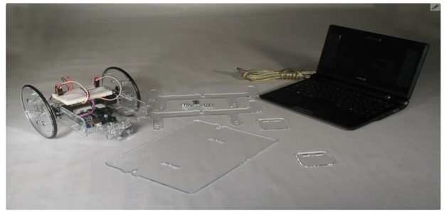
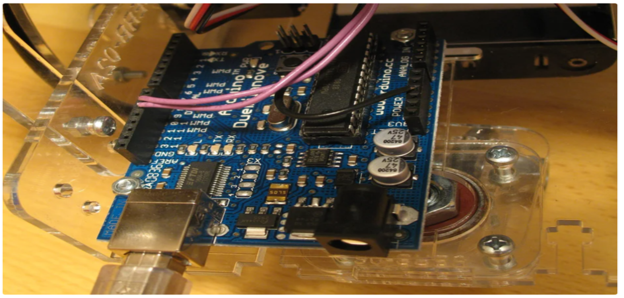
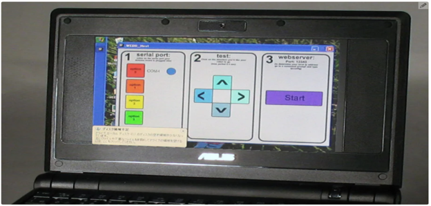
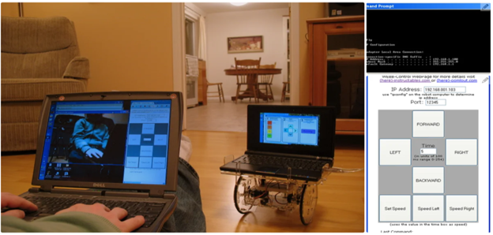
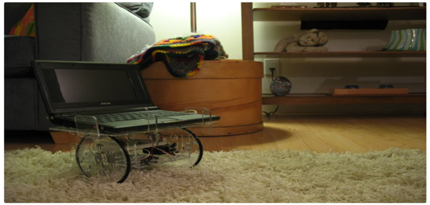

This Instructible will show you how to build your own Web Connected Robot (using an Arduino micro-controller and Asus pc). Why would you want a Web Connected Robot? To play with of course. Drive your robot from across the room or across the country, using nothing more than Skype and a web browser (nothing to install on the controlling computer). After that? Dig into the software & adapt it however you like, add a GPS so you can watch where you're driving on a map, add temperature sensors to map temperature gradients in your house, or sonar sensors to add controls on what you're web drivers can and cannot run into.
1 / 6

2 / 6

3 / 6

4 / 6

5 / 6

6 / 6
